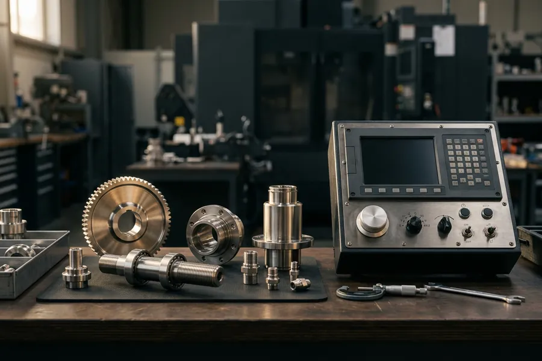

Capacidades
Agrupamento de linhas de produção e serviços com descrições curtas e diretas.

Demonstração Industrial · VETTA
Uma apresentação institucional objetiva para indústrias que precisam explicar processos, capacidades e critérios técnicos a compradores e parceiros.

A empresa
A VETTA é uma empresa fictícia criada para esta demonstração. O conteúdo foi organizado para mostrar como um site industrial pode apresentar processos complexos sem perder clareza.
A navegação separa capacidades, materiais e formas de contato. Cada seção tem um objetivo único, e o visitante encontra o caminho para uma conversa comercial em qualquer ponto da página.
“Quando o processo é complexo, a comunicação precisa ser simples.”
Direção de conteúdo · texto demonstrativoEstrutura do site
Blocos de conteúdo pensados para o ciclo de decisão de um comprador industrial.
Agrupamento de linhas de produção e serviços com descrições curtas e diretas.
Espaço para especificações, materiais, tolerâncias e documentos consultáveis.
Formulário e chamadas que direcionam o visitante para uma conversa qualificada.
Detalhes de execução
Elementos aplicados nesta página e replicáveis em projetos reais.
Esta é uma página demonstrativa. A Madson Digital adapta estrutura, conteúdo e identidade ao seu negócio.